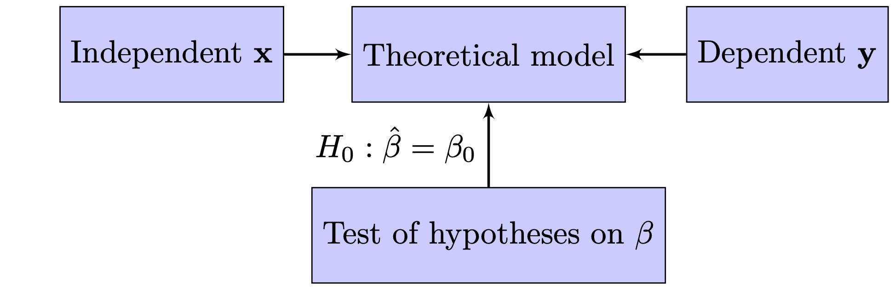
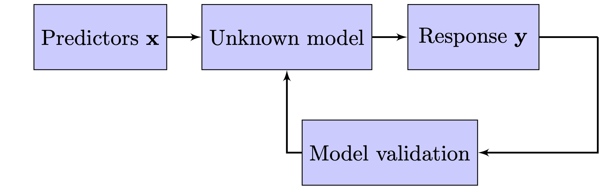
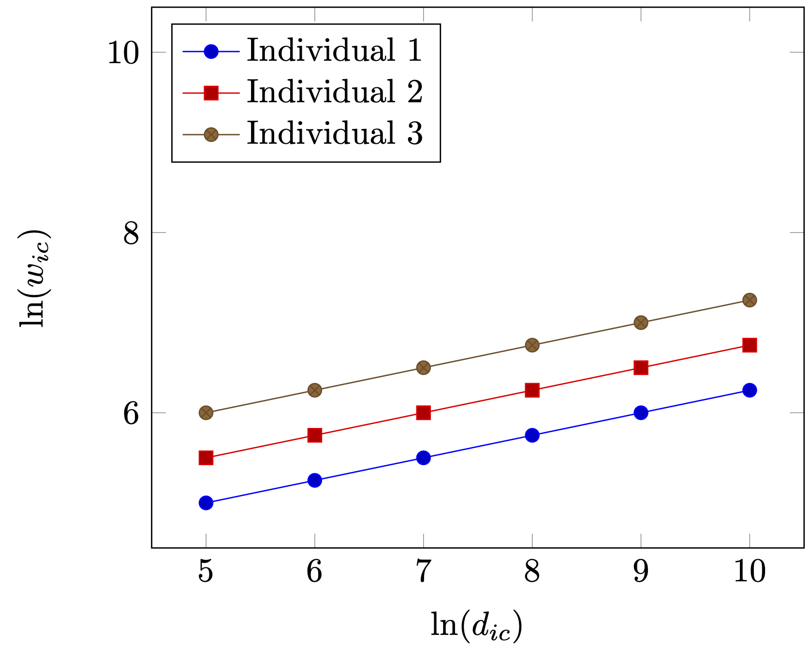
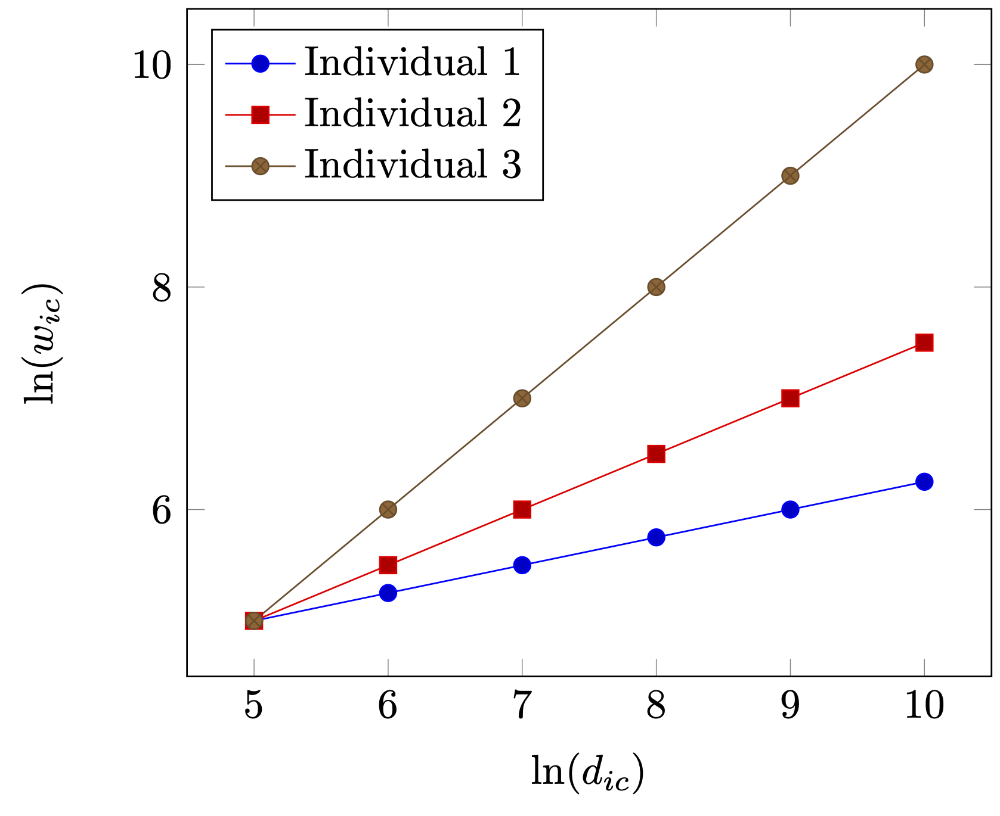
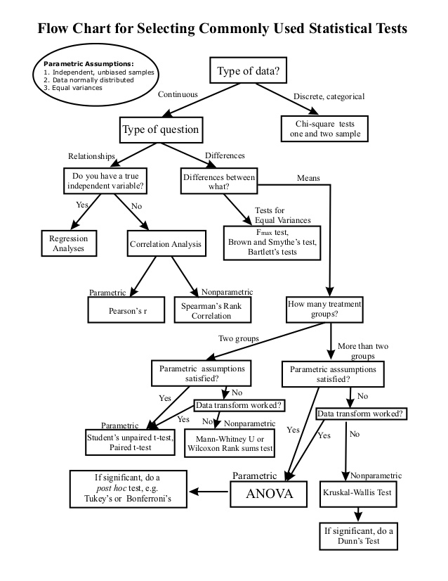
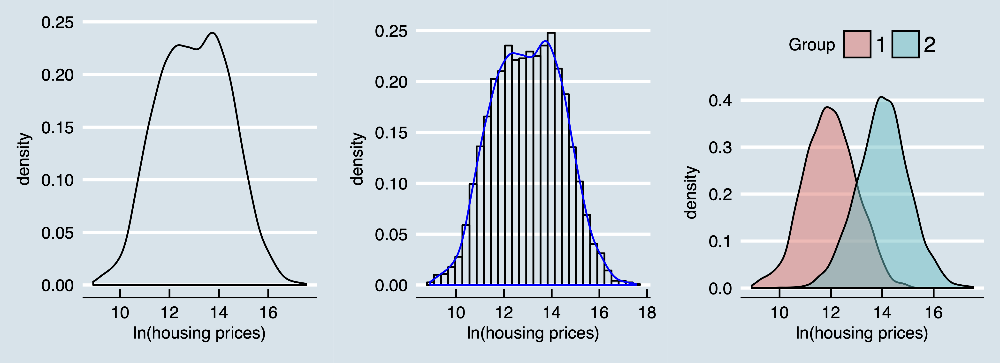
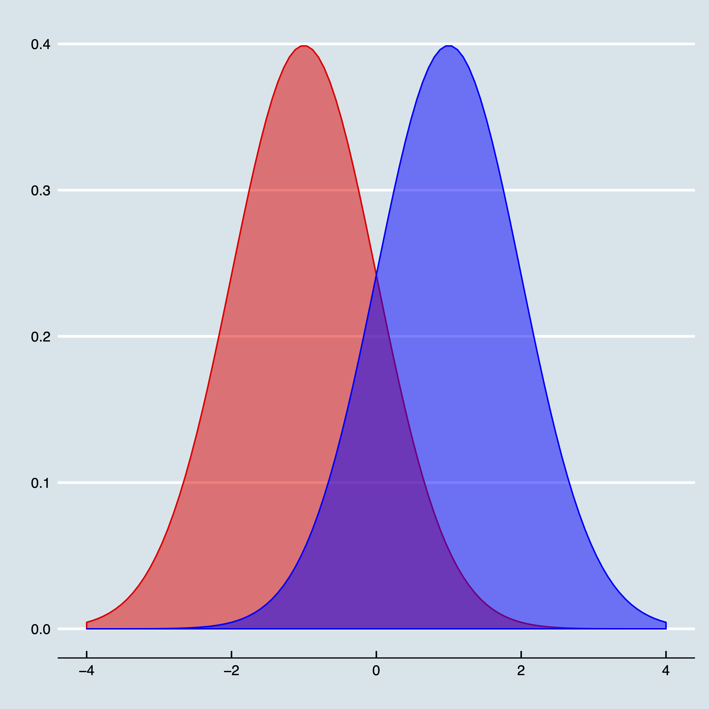

N = 100000 # number of draws
# Draw from first distribution
n1 <- rnorm(N, (-1), 1)
# Draw from second distribution
n2 <- rnorm(N, 1, 1)
# Count how many times second dist.
# is smaller than first dist.
count <- sum(n2 < n1)
count/N # get probability 1 Introduction: two different cultures
The sexiest job in the next 10 years will be statisticians. (Varian 2014)
The quote above from Hal Varian is in one aspect wrong; nowadays, we do not call them statisticians but data scientists instead. Nevertheless, in the last two decades companies such as Google, Ebay, Whatsapp, Facebook, Booking.com and Airbnb, have not only witnessed enormous growth but to a considerable extent also changed the socio-economic landscape. Indeed, with the increasing abundance of (spatial) data and computer capacity, the ability to gather, process, and visualize data has become highly important and therefore highly in demand as well. And all the models and tools these data scientists within these companies use are very much data driven with often remarkable results.
In his controversial and path-breaking article, Breiman (2001) presented two different cultures in statistical science. One governed by a (probability) theory-driven modeling approach and one governed by a more (algorithmic) data-driven approach. These two cultures carry over to the econometric and ultimately the empirical regional economics domain as well, where—commonly for all social sciences—the theory driven approach still very much dominates the landscape of the realm of contemporary regional economics.
I use a wide definition for the regional economics domain, which consists of most aspects of regional science in general but for which the theoretical approach is always from an economic perspective. Topics such as, e.g, interregional migration, trade, transport flows and commuting on the one side and regional performance, regional clustering, population growth and specialisation on the other side fall all under this, admittedly, rather wide umbrella.


Figure 2 is an adaptation from the one displayed in Breiman (2001) and describes the processes governing these two cultures. Figure 2 (a) is what I refer to as the modeling approach, where a statistical model is postulated and is central to this culture. This is the classical approach where statistical probability theory meets the empiricism of Karl Popper. Usually the model assumed is stated as a linear model and in its most simple form can be denoted as:
Sometimes as well referred to as the frequentists’ approach. However, this typically concerns the debate between classical statistics and Bayesian statistics, where the two approaches I refer to are more concerned with wider frameworks, of which the Bayesian approach is just one of the elements. I come back to Bayesian statistics and the frequentists’ approach later, but I do not see them necessarily as opposites. And I quite object to the term frequentists’ approach as Bayesian statistics is much more focuses on counting then the frequentists’ approach.To be honest, Popper himself was not a great fan of simply null hypothesis testing. He actually argued for the falsification of explanatory models, where in his view falsification does not only rely on statistics but on consensus amongst scientists as well.
\[ \mathbf{y} = \mathbf{x}\beta + \epsilon, \tag{1}\] where in (regional) economics language, \(\mathbf{x}\) is referred to as the independent variable, \(\mathbf{y}\) as the dependent variable and \(\epsilon\) as a residual term. In this setup, using the data at hand, one constructs a statistical test to which extent the estimated coefficient (denoted with \(\hat{\beta}\)) deviates from a hypothesized value of the coefficient (denoted with \(\beta_0\))—typically the hypothesis \(H_0: \hat{\beta} = 0\) is used with as alternative hypothesis that \(H_1: \hat{\beta} \neq 0\). However, that is always within the context of the model. So, when the null-hypothesis is rejected, it not necessarily means that the true \(\beta\) is unequal to zero, it might also be caused by errors in measuring \(\bf{x}\) or even using the wrong ![One of the assumptions for regression techniques such as the one used here is actually no misspecification of the model, but—apart from some possible tests on the functional form a specific regression form—usually little attention is give on the validity of the model used. More importantly, within this framework the model itself is usually not tested .]
There is another fallacy with this approach that is often overlooked and that is that the alternative hypothesis being true is a probability as well. Namely, most hypotheses researchers test are typically not very probable. Not taken this into account would actually lead to more null hypotheses to be rejected then should be (false positives).
Figure 2 (b) yields a schematic overview of a more data driven approach. Here, we see an unknown model fed by predictors \(\mathbf{x}\) that lead to one or multiple reponses \(\mathbf{y}\). The main objective here is not to test hypotheses, but to find the best model instead which able to explain the data and to predict the data. Usually, the models are evaluated by some kind of criterion (e.g., the mean squared error), which is not completely unlike the modeling approach. However, there are two main differences between the two approaches. First, the data driven approach considers several models in a structural approach. For instance, the question which variables to include is captured by an exhaustive sourse of all combinations in the modeling approach (e.g., with classification and regression trees or random forests), while in the theory driven approach, the choice of variables is based on the theory and a small number of variations in the specification. Second, measurements on model performance are done in the data driven approach and, typically, in the model approach. The latter is not that important for hypothesis testing, but for prediction this matters enormously, because adding parameters might increase the in-sample fit, but actually worsen the out-of-sample fit (a phenomenon called overfitting).
In economics in general, and in regional economics in specific, most of the tools employed are very much theory or model driven instead of data driven. My (conservative) estimate would be that at least 90% of all empirical work in regional economics revolves around postulating a (linear) model and testing whether (a) key determinant(s) is (are) significantly different from a hypothesized value—usually zero. That is, the context of the model assumed.
In a seminal contribution, Breiman (2001) states that deep into the 90s 98% of the statisticians actually employed the theory driven paradigm and only 2% a data driven paradigm. With the advent of the availability of internet connectivity, large (online) data sources, and faster computers the statistical realm changed dramatically. However, this has not permeated yet in the social sciences (see as well Varian 2014).
At best, this approach can be seen in a causal inference framework. If a determinant (such as a policy in the context of regional economics) \(x\) changes, does it cause then a change in the output \(y\) (most economists typically use some welfare measure). This approach thus provides a rigid and useful approach to regional policy evaluation. If we implement policy \(x\), does welfare measure \(y\) then improve? Note that this always considers a marginal change as \(x\) is usually isolated from other (confounding) factors.
Most of this research actually intends to mimic a difference-in-difference approach and gained enormous momentum with the textbook of Angrist and Pischke (2008).
However, policy makers oftentimes have different questions for which they need solutions. Usually, they revolve around questions starting with What determines performance measure \(A\)?, Which regions can we best invest in? or, more generally, What works for my region?. These types of questions require a different approach than the previous one. Namely, the former type requires an approach focused on explaining while the latter type requires an approach focused on predicting.
The remaining part of this position paper is structured as follows. Section 2 gives an overview of current modeling practices and describes the `traditional’ inference based approach as well as some data-driven approaches that have been used in the recent past (though by far not as often as the traditional methods). Section 3 sets out both a research and an education agenda as it addresses how to bridge the gap between the daily practices of regional economists and the demands of local policy makers. The final section shortly summarizes the main points raised in this position paper.
2 Regional economists turning the blind eye
Unmistakably, in the recent decade the two major changes to economic empirical research in general are the advent of increasingly larger data sources and the large increase in computer power (Einav and Levin 2014). The methods that most economists employ, however, have not changed. Linear regression or one of its close relatives (such as logistic, poisson or negative binomial regression), preferably in a causal framework, is still the most common tool. This also applies to regional economists, who—although coming from a tradition to use various methods from different disciplines—have increasingly used similar methods as in ``mainstream’’ economics.
This focus on marginal effects and causality is certainly very worthwhile and brought us many important insights. However, it is also typically done within a very narrow framework and, below, I will lay out what we are missing both in research and in our educational curricula, when our focus is on the framework above and as advocated so much as in Angrist and Pischke (2008).
2.1 The blind eye in research
The traditional model of a (regional) economist looks as follows: \[ y_i = \alpha + \beta x_i + \mathbf{z}_i\gamma + \epsilon_i, \tag{2}\] where \(y_i\) is referred to as the dependent variable, \(x_i\) is the main variable of interest, and \(\mathbf{z}\) is a vector of other variables. \(\alpha\), \(\beta\) and \(\gamma\) are parameters, where we are especially interested in the value of \(\beta\). Finally, \(\epsilon_i\) is an identical and independent distributed error term.
Usually the main aim is to estimate \(\beta\) as unbiased as possible in a causal framework. So, ideally, we would like to control for unobserved heterogeneity bias, specification bias, measurement error, reverse causality, selection bias, and so forth. Econometric theory has produced some very powerful techniques to control for some of these biases, such as instrumental variables, diff-in-diff procedures and the use of fixed effects. However, these methods are not panacea for everything. First, they work wonders for only specific research questions that have to do with the preferably causal effects of marginal changes. Second, some of these techniques require very specific and strong assumptions which are possibly not always met, which leaves doubts upon the validity of the results.
Below, I will deal with instrumental variables, diff-in-diff and fixed effect techniques consecutively. I will specifically focus on some of the disadvantages. Some of the arguments are adaptions from Deaton (2010) and I refer to this reference for a more complete treatise on the disadvantages of using instrumental variables and diff-in-diff methods. For all the advantages not dealt with in this paper, read Angrist and Pischke (2008).
2.1.1 Exogeneity versus independence
Economists love instrumental variables, because a good instrumental variable can tackle reverse causality, measurement error and unobserved heterogeneity bias all at one. Originally, instrumental variables come from simultaneous economic models such as supply and demand models. A classical example in a regional context would be: \[ \begin{aligned} P_r &= \alpha + \beta E_r + \mathbf{z}_r\gamma + \epsilon_r, \label{P}\\ E_r &= \delta + \kappa P_r+ \mathbf{w}_r\lambda + \nu_r,\label{E} \end{aligned} \tag{3}\] where \(P\) denotes population, \(E\) employment and \(z\) and \(w\) are vector of other regional \(r\) characteristics. \(\alpha\), \(\beta\), \(\gamma\), \(\delta\), \(\kappa\) and \(\lambda\) are parameters to be estimated.
Obviously, one can not directly estimate Equation 3 because of the intrinsic simultaneity. However, suppose one is interested in estimating the impact of employment on population growth, then one can use the second equation of Equation 3 and search for exogeneous variation in employment to use it as an instrumental variable. A possible strategy could be to look into the population changes of surrounding regions (but within commuting distance), as they might not have an impact of the population change in the current region (see Graaff, Oort, and Florax 2012a, 2012b)
This is not really precise; I mean exogeneous to population variation. I will come back to the use of exogeneous later.
The main point , however, is that equations Equation 3 constitute a full-blown economic which has direct relations with underlying structural theoretical modeling frameworks [such as Roback (1982). And the instrument then comes directly (is internal) from the model.
Directly from Deaton (2010).
In practice, however, researchers often take another approach. And that is to look for external instruments. Instruments that have no relation with a structural (simultaneity) model. And there are is (a large) potential pitfall when doing so and that is to end up with an instrumental variables that is not independent from the left-hand-side variable. As it seems, there is some confusion about terms as independence and exogeneity, so let’s first clarify the exact assumptions a valid instrument should satisfy.
Suppose that somebody is interested in the impact of population on employment; so, one would like to identify \(\kappa\) in Equation 3. To control for endogeneity researchers then search for an exogenous and relevant instrument, \(Z_r\). The latter indicates that the instrument has an impact on the possible endogeneous variable (\(P_r\)) and the former indicates that the instrument does not affect the left-hand-side variable (\(E_r\)), only via \(P_r\) and other instruments. In formal notation: \(E_r \perp Z_r|P_r, w_r\). Thus, exogeneity means that the instrument and the left-hand-side variables are independent from each other conditional on the instruments.
Unfortunately, exogeneity is often used as an argument for variables that are external to the system, denote a sudden shock or for phenomena that are considered to be exogenous in other fields (such as in geography). And this usually leads to instruments that do not satisfy the independence assumption. I will give three examples below.
First, and very often use is the concept of deep lagging. So, in our case, we look for regional population say 100 years ago and use that as an instrument. It must be exogenous because we cannot change it, right? Well, it is definitely relevant, as regional population is remarkably resilient. Where people lived 100 years ago, they most likely live today. But, if we take model Equation 3 seriously, then the population 100 years ago, must at least have affected employment 100 years ago, and if population is resilient then most likely employment as well (and we even do not consider yearly temporal dynamics between population and employment). So, in all likeliness, employment and population 100 years are not (conditionally) independent.
The second type of instruments people often use are regional characteristics (preferably deeplagged as well), and specifically accessibility measures as road, railroads and canals. For a large audience the following story typically seems very plausible at first sight. At the end of the 19th century the large scale introduction of the railways enabled households to live further from home and escape the heavilty polluted inner cities where the factories remained (making use of the same railroads intersecting in city centres). Railroads thus changed the location of population and not that of employment. While this story is entirely possible, what is often overlooked is the fact that factories and thus employment changed location as well, but only 20-30 years later, and typically along the same links as opened up by railway lines. So, the railway network 140 years ago and contemporary location of employment are not (conditionally) independent.
A last often used category of candidate instruments is geography-related variables. In our case that could be regions of municipalities. For instance, the Netherlands witnessed for a large period intensive population location policies. This entailed that the dutch government pointed out municipalities that were allowed to grow (in terms of housing policies). Using fixed effects of these specific municipalities then as instruments sound as a viable strategy. However, this requires strict assumptions. Namely, being a specific municipality will only have an effect on employment through being designated by the Dutch government; and by nothing else.
Is this to say that instrumental variables is a bad technique? No, absolutely not. If the instrument is valid, this is one of the most powerful techniques in the econometric toolbox. The point made here is that good instruments are actually hard to find and that structural simultaneous models (typically, in the context of supply and demand) usually work better to find instruments than instruments that are completely external to your problem. And if you really need to use an external instrument, be very specific and open about the assumptions you need to make.
2.1.2 Local and average treatment effects
Two concepts which have received quite some attention recently in econometrics, but is often overlooked in applied regional and urban economics are local average treatment effects and average treatment effects. The former deals with the interpretation of instrumental variables, the latter with the (interpretation) of spatial difference-in-difference methods. Even though these methods are different, they have similar consequences for the interpretation of research findings and their underlying assumptions.
The Local Average Treatment Effect (LATE) deals with the underlying assumptions that have to be made so that the instrumental variable estimation actually measures what we want [see Imbens and Angrist (1994). Referring again to our example above and say that we want to instrument regional population changes with municipalities being designated by a national policy to increase local housing supply. What we then actually measure is the effect of changes in population on employment of those municipalities that have actually complied with the national policy. Municipalities that dropped out in an earlier stage are not taken into account, but municipalities who did comply but never implemented the policy are.
So, what is actually measured is the designation of municipalities to a policy, which might be a very interesting research question indeed, but in all likelihood does not necessarily coincide with the coefficient \(\kappa\) in model Equation 3 above. In almost all cases the LATE theorem points at a more restrictive effect (and thus interpretation) of the instrumental variable than the model sets out to estimate. Only under very strong assumptions—homogeneity of regions, perfect compliance, and so forth— the coefficient by the instrumental variable coincides with the coefficient of the structural model.
A different but related issue is that of the average treatment effects. Since the seminal work of Angrist and Pischke (2008) difference-in-difference methods (and all its variants) gained enormously in popularity. As well as in regional economics where spatial difference-in-difference are applied as often as possible. The idea itself is rather straightforward and originates from the search for semi-experimental randomized controlled trials (RCT’s).
For the regional domain, assume the following: there is one group of municipalities that implement a policy (the treatment; \(T = 1\)) and one group of municipalities that does not (\(T = 0\)). Both groups of municipalities are measured before (\(t = 0\)) and after implementation (\(t=1\)). Then we can rewrite model Equation 2 as:
\[ y_r = \alpha + \gamma_1 T_r + \gamma_2 t_r+ \beta (T_r \times t_r) + \epsilon_r, \tag{4}\]
where \(Y_r\) denotes a specific regional outcome variable, \(T_r\) the set of regions that are treated and \(t_r\) the post implementation period. In this set-up \(\gamma_1\) measures the average impact of the treated regions, \(\gamma_2\) the impact of the time period, and \(\beta\) is our coefficient of interest; being the impact of the treatment. Note that \(\beta\) in this setting actually denotes the difference in the outcome of the treatment groups minus the difference in the outcome of the non-treated groups: hence, the name differences-in-differences.
The main assumption for this technique relies on the trueness of randomization of treatment across, in our case, municipalities. In reality, the concept of randomization is difficult to defend. Poor regions are more likely to receive governmental subsidies, accessibility improvement are usually implemented in dynamic and succesful regions, and so forth. To circumvent this, researchers look at borders between regions. Back to our example, we then look at individuals close to a border between two municipalities, where one municipality received a treatment and the other did not. It is then defendable that such a band around a border is relatively homogeneous in characteristics an that both regions are thus equal except for the receivement of treatment.
This approach has two main consequences. The most mentioned consequence is that the effect \(\beta\) is a so-called mean treatment effect. Every region, firm or individual benefits (is harmed by) equally from the treatment. So, it might very well be that some regions benefit greatly from some a policy, while it is actually harmful for others. Making the treatment effect more heterogenous is difficult and requires a lot from the data as every subgroup needs its own semi-experimental randomized control trial.
Extending this argument to spatial difference-in-difference methods leaves us even with the assumption that the whole region should be alike the border area in term of benefitting from the policy. Or one should be satisfied with the fact that \(\beta\) only tells us something about the effect of the policy in a border area. An area most likely not very representative of the rest of the region.
The other consequence relates again to the compliance assumption. Regions and municipalities themselves can be argued to fit well in treatment or non-treatment groups. And if not, non-compliance should be easily detected. However, for firms and individuals, compliance to randomization of treatment is often a very harsh assumption. More and more, evidence is found that especially individuals are very resourceful to circumvent randomization, whether it by allocation to class sizes, elementary schools, or even military draft by lottery.
Randomized controlled trials and difference-in-difference methods are strong techniques for the applied regional economist. The point here is, however, that without very strong assumptions, findings are mean effects that only applied to a limited part of the total sample.
2.1.3 Fixed effects and heterogeneity
An often used technique in applied econometrics is the use of fixed effects. They work brilliantly in removing unobserved heterogeneity but they come at a price which is typically overlooked. Namely, they remove valuable variation as well in both the dependent (predictor) \(x\) and the independent (reponse) variable \(y\).
Consider the following model in Equation 5, which is at the moment a heavily researched issue in both regional and urban economics. The issue here is to what extent city density increases individual productivity.
\[ \ln(w_{ic}) = \alpha + \beta \ln(d_{ic})+\epsilon_{ic}, \tag{5}\]
\(w_{ic}\) denotes here individual wages (as a proxy for productivity) and \(d_{ic}\) density of the city \(c\) individual \(i\) lives in. \(\beta\) is our parameter of interest and because of the log-log structure \(\beta\) denotes an elasticity. Obviously, direct estimation of Equation 5, would lead to a misleading parameter \(\beta\) if one is aiming to measure a causal effect. Namely, \(\beta\) might be influenced by other (confounding) factors than only city density. One can think of factors such as skill level of the city population, accessibility of the city, sector structure of the city and city government. Moreover, a phenomenon called sorting might occur, where more ambitious, risk-seeking and high-skilled people migrate into larger and more dynamic cities.
I specifically do not use the term here. Namely, Equation 5 is a perfectly fine model to measure the overall correlation (\(\beta\)) between city density and individual wages and mosts non-economists are perfectly fine with this model (see, e.g., Bettencourt and West 2010). So, whether a parameter is biased depends ultimately upon the research question.
To answer the question to what extent density causes wages, researchers therefore resolved to using fixed effects. A baseline model can be seen in Equation 6.
\[ \ln(w_{ic}) = \nu_i + \xi_c + \beta \ln(d_{ic})+\epsilon_{ic}, \tag{6}\]
here, \(\nu_i\) denotes individual \(i\) specific fixed effects and \(\xi_c\) city \(c\) specific fixed effects. So, everything that does not vary over time for individuals and cities is now controlled for. A more insightful way what exactly happens is to write Equation 6 in changes, such as: \(\Delta \ln(w_{ic}) = \beta \Delta\ln( d_{ic}) + \epsilon_{ic}\). So, our Equation 6 now identifies the effect by looking at the impact of a change in density on a change in wages .
Using changes (first differences) to remove fixed effects is a viable but often overlooked technique for dealing with fixed effects.
Multiple improvements have already been to this model including controlling for sector/task of work and migrating between cities. Including these fixed effects (and many more) has had a profound effect on the value of \(\beta\). Directly estimating Equation 5 yields an elasticity of around \(1.15\), while estimating a model such as Equation 6 including many fixed effects would yield an elasticity of around \(1.02-1.03\). So, there are economies of agglomeration, but they are not very large.


Is this now the end of the story? Alas, it is not. At least three remarks can be made which put the above into perspective.
First of all, note that we need changes over time—in our case in individual wages and city density. Now, if we take the extreme example of a subgroup of individuals who do not face wage changes and cities who remain relatively of equal size, than this subgroups will not be used for determination of \(\beta\). Of course, not many observations will have these characteristics. Unfortunately, with more detailed data on sector structure and migration, we need individuals that move both residence and job for identification. All others are redundant. This increases the risk on what is called sample selection bias—identification is based on a specific subgroup with deviant characteristics. The point made here, is that with the use of many fixed effects, much is demanded from the data and one need always check whether the sample used for identification is not too restrictive.
Secondly, if there are unobserved factors that both relate to wages and density, then it is actually very likely that these unobserved factors are related to their changes as well. One particular example here is technological change, which might affect density (suburbs) and wages at the same time, and is definitely not time-invariant. If one thinks about it, most interesting socio-economic phenomena are not time-invariant, except perhaps longitude and latitude. For example, a specific argument to use fixed effects is to control for local attractivity. But what individuals and firms find attractive does change of time, especially within cities, but across cities as well. Before air-conditioning cities in Florida and Nevada were definitely not as popular as today. And malaria-rich areas such as wetlands and river banks were always avoided until recently.
Thirdly, the use of fixed effects is based upon the assumption that all variation is based on variation of levels. That is, each fixed effect actually denotes a very specific constant (for each individual and city in our case). However, this really requires a very homogeneous sample except in levels. For illustration, assume that there are three individuals, where individual 3 has higher wages than individual 1 and 2, because of, say, differences in skill levels (see as well Figure 2 (a)). However, as Figure 2 (a) clearly shows as well, apart from individual level variation, returns to density are similar for individuals 1, 2 and 3. So, each individual benefits equally from moving from a small village not a large metropolitan area. Now, assume that individuals are different with respect to the returns by living in large and denser cities. Then the impact \(\beta\) should also differ among individuals as is illustrated in Figure 2 (b). This is not an argument to say that using fixed effects is wrong. But if the sample might be heterogenous, i.e. that units respond differently to different predictors, then using fixed effect might not yield a complete pictures and in some specific cases even a distorted picture.
Fixed effect techniques is a must have for every empirical regional economists. However, the message I would like to convey here is that it does not remove time-invariant unobserved heterogeneity (of which there is more than most researchers realise), is not very suitable for tackling heterogeneity in your main effect and might lead in some cases to sample selection bias.
2.2 The blind eye in education
So, if the main instruments of regional economists are not always applicable and we miss tools in our toolbox to tackle, e.g., heterogeneity, prediction and non-marginal changes, how do we then fare in teaching? Are the students who now graduate equipped with the right toolbox that they use as well in their later careers? And do we have a consistent curriculum using similar or complementary tools running from the bachelor to the graduate studies? These types of questions are not frequently asked, and, if at all, not very well met. Mostly because of vested interests of departments and researchers.
In this subsection I will, however, try to answer partly some of these questions and identify what is missing in our curriculum. I will first look at the traditional applied econometrics approach and then to the (non-existence) of other courses geared towards data science, including the use of statistical software.
2.2.1 Statistics & Applied Econometrics
In contemporary economic bachelor curriculae students typically follow one applied statistics course, where some hands-on experience is offered by working with small datasets—typically in menu driven statistical software such as SPSS or STATA. In the master phase, if students start to specialise in, e.g., regional economics, students then follow one applied econometrics course with an emphasis on regression techniques, instrumental variables and the use of fixed effects.
The statistics courses are very much geared towards traditional socio-economic research where a hypothesis is formed (usually the difference between two groups not being zero), data is gather (via survey techniques) and statistical tests are applied on the difference between two groups (usually with the use of \(t\)-tests).
For most students, especially applied statistics feel as a very mechinal procedure using a pre-defined set or recipes. McElreath (2016) introduced a nice analogy with the old folkore of the Golem of Prague. The Golem was a mindless robot of clay that obeys orders. Scientists also use golems, especially with statistical procedures, where the tests or the estimations one performs are small golems in themselves. A mindless procedure that obeys what you tell them do. Sometimes for the better, sometimes for the worse.
For students this is not completely unlike: if you have this procedure, with these data, you should use this test—if not, use that test. Why to use that test is not an issue, one just follows a particular scheme and deploys one’s own golem. Figure 3 gives a typical example of such scheme or flowchart for the usage of statistical tests.

What is problematic with this approach is that students never completely understand what they are doing. Throughout their bachelor (and master) years, the relation between test statistics, \(p\)-values, significance level and confidence levels is typically lost on them.
For a large part, confusion amongst students is caused by the fact that (classical) statistics at the bachelor level is in way rather counter intuitive. Take, e.g., the following two statements about the 95% confidence interval.
A 95% confidence interval means that for a given realized interval there is a 95% probability that the population parameter lies within the interval.
With numerous repeated samples, the fraction of calculated confidence intervals (which would differ for each sample) that encompass the true population parameter would tend toward 95%.
Most students—in fact the audience at large and most scholars as well—would choose the first statement as being true for the 95% confidence interval. But in fact, the first statement is wrong and the second is true. The confidence interval is only formed by the (often implicit) assumption of numerous (infite) sampling. It does not resemble a statement about a probability of the population parameter even though most us feel intuitively that that should be the case.
These concepts of sampling and the associated confusion unfortunately, carry directly over to the applied econometrics domain. However, usually students find applied econometrics easier as less emphasis is put on the statistical background of the estimators. Unfortunately, applied econometrics only comes back in non-methods courses in the master phase, less so in the bachelor years, even though concepts as regression is taught in the first bachelor. This typically leaves bachelor students with a small amount of experience and less to none intuition when it comes to applied (econometric) work with empirical datasets.
as I will argue in the next section there are other ways of teaching students concepts of statistics and probabilities which rely less on sampling and more on counting instead. However, for this, computers and statistical software packages are needed, but then at least we can make statement as the first one above, which feel far more intuitive.
2.2.2 Data science
In addition to statistics and applied econometrics, students are now offered a (data science) programming language as well in the bachelor, mostly R of Python. They usually only learn the basics and typically do not work with databases, datascience of modeling techniques in these type of courses. And, unfortunately, subsequent bachelor courses do not use these programming languages for their exercises. This renders the added value of these courses quickly to zero.
Master courses now use more and more data science techniques and languages, although—in all honesty—typically outside the domain of (regional) economics. Unfortunately, without a solid background in dealing with data management and newer and more applied concepts of statistics, students approach these forms of techniques (e.g., classification and regression trees) again as mechanical golems by following recipes without truly understanding the underlying theory.
3 Incorporating the data science culture agenda
The previous section discussed contemporary and cutting-edge applied econometric methods of (regional) economists. As argued, these methods have merits. Not least because they are all geared towards identifying causal relationships, and to a far greater extent then in other social sciences.
However, these methods do come at some costs. First of all, the results should be interpreted as marginal effects. A small change in \(x\) causes a certain change in \(y\). Second, the effect is always ceteris paribus. All possible other factors are controlled for. Third, most of these methods face difficulties with heterogeneous effects. Fourth, and final, the underlying statistical framework is often difficult to interpret—for students, scholars, and the audience at large.
These disadvantages do have serious consequences for what this traditional toolkit can and what it cannot. First of all, it is very good in explaining but very bad in predicting. Second, system-wide changes and impacts are difficult to incorporate. Third, it has difficulties with different heterogeneous subgroups. Fourth, the underlying statistical framework makes it difficult to evaluate models. And, as last, the statistical framework also make it difficult to deal with non-linear models and non-parametric techniques are difficult to yield with this specification.
Below, I first explain how using techniques from the data driven approach side, or the data science side, can help research in the field of regional economics further in three directions: model comparison, heterogeneous effect sizes, and predicting.
Thereafter, I describe what needs to be changed in education, so that future students will better enabled to deal with the abundance of larger datasets, the need for better predictions and a more intuitive understanding of probabilities and testing.
3.1 In research
3.1.1 Dealing with heterogeneity
One of the weaknesses of the theory driven approach—or the more classical research methods—is dealing with heterogeneity. Fixed effects regressions only deal with removing level effects and not varying slope effects, difference-in-difference designs only give average treatment effects and instrumental variables have difficulties with incorporating heterogeneity.
There are some advances made in introducing heterogeneous instruments in quantile regression techniques, but the exact mechanism is still not clear-cut.
The argument made against heterogeneity is that it only affects efficiency (i.e., the standard errors), but in most cases this is not true. In non-linear models, such as discrete choice and duration models heterogeneity affects the consistency (i.a., the parameter of interest) as well. Moreover, interpretation of the parameter of interest might be completely off when not allowing for heterogeneous groups.

Consider Figure 4 where in the left panel a density distribution is given from a distribution of lognormally distributed housing prices. When interested in explaining the effect of a variable \(x\) on housing prices this is typically the first descriptive plot an applied researcher creates. The middle panel enlights this plot further by combining both a density plot and a histogram. But what if the sample consists of types of housing markets. One overheated and one with ample housing supply. Then most likely the mechanism on both markets are different and the effect \(\beta\) could be very well different for both markets. Indeed, the right panel shows that the density distribution from the left panel is actually a realization of a mixture of two (in this case normal) distributions. The housing market with ample supply of houses is then represented by group 1 and the overheated housing market is represented by group 2.
These latent class approaches are typically not much applied in (regional) economics (see for an exception, e.g., Lankhuizen, De Graaff, and De Groot 2015). However, correct identification of submarkets or subgroups could be very important for policy makers as the average treatment effect may very well not even apply to anyone (an argument, in Dutch, made as well in Graaff 2014).
In other economic or social science fields, such as market and transportation science, however, this is already a common approach.
Slowly, the notation that fixed effects contain much useful information permeated in the regional economics domain. An insightful and straightforward way to do this is by adapting the wage model in Equation 6 as follows:
\[ \begin{align} \ln(w_{ic}) &= \xi_c + \beta \ln(d_{ic})+\mathbf{z_{ic}}\gamma + \epsilon_{ic} \notag \\ \xi_c&=\alpha + \mathbf{x_c}\delta + \mu_c, \end{align} \tag{7}\]
where the individual wage model is now split up in two stages. The first stage model the individual variation and regional fixed effects. The second stage now regresses regional variables on the estimated fixed effects. This approach is now frequently applied (for example, in the so-called sorting model Bayer, McMillan, and Rueben 2004; Bayer and Timmins 2007; Zhiling, Graaff, and Nijkamp 2016; and Bernasco et al. 2017).
Two large advantages of this approach are that the standard errors on both the individual and the regional level are correctly estimated and that, if needed, instrumental variable methods may be applied in the second stage. There is one disadvantage and that is the fixed effects in the second stage are not observed but estimated (imputed) and that has an effect on the standard errors.
Note that model Equation 7 is very much alike multilevel models, which are very often used both in the data driven approach and in other social science apart from economics. Multilevel modeling works great in both correctly estimating a model with observations on various levels (such as individuals, firms, sectors and regions) and in retrieving heterogeneous estimates (both in levels and in slopes). And with the increasing advent of micro-data, combining a individual-regional model as in Equation 7 with the more rigorous structure of multilevel modeling is definitely worth more attention in the near future.
Interestingly, more (spatial) non-parametric approaches (see, e.g., the geograpically weighted regression exercise in Thissen, Graaff, and Oort 2016) have become more popular as well in the last decade (typically, because of increased computer power). This approach needs more attention as well, as the connection with (economic) theory is often lost. And, especially regional geographers apply spatial non-parametric techniques, not the regional economists.
3.1.2 Model comparison
One element that is notoriously weak in the theory-driven approach is model comparison—or the models should be nested. And in many cases, model comparison is often very much asked by policy makers and the audience at large, if not only for finding the correct specification. The latter question is concerned with the question which variables (predictors) to include in a model and which predictors of them perform best. Note that this is analogous to questions regional policy makers might have: such as, which policy instruments best to deploy given limited financial budgets.
A typical example can be found in the field of spatial econometrics model where comparison is an important issue as typically there are several competing theories, non-nested, for the distance decay function (usually measured with a so-called spatial weight matrix \(\mathbf{W}\)). And usually those theories are very much related (e.g., distance decay measured in Eucledian distance or generalized travel costs).
Another field where model comparison is of large importance is in the estimation of the strength of socio-ecoomic networks. In theory, socio-economic networks should produce so-called power-laws: or a loglinear relation between the size of nodes and the number of connections. Empirically, these relations often follow a slightly different distribution. What kind of distribution fits then best is still a matter of debate.
One of the most famous of these relations is Zipf’s law, where the ordering of cities and the size of the population follows an almost perfect loglinear distribution; see for an in-depth treatment Gabaix (1999).
For proper model comparison, a Bayesian approach is almost unavoidable. The key difference between the frequentist and the Bayesian approach is how to interpret uncertainty. In the frequentist approach uncertainty originates from sampling, while in the Bayesian approach uncertainty is caused by not having enough information. So, a Bayesian statistician lives in a deterministic world but has a limited observational view.. Note that the rule of Bayes is not unique for Bayesian statistics. Namely, this rule is central for all probability theory.
Both frequentists and bayesians rely heavily on sampling. However, sampling in frequentist statistics is a device to construct undercertainty around an estimate. Sampling in Bayesian statistics is a way to perform integral calculus (or to simulate observations).
What is unique for each Bayesian model is that it has a prior and posterior. The prior is an assumption about something that you do not know (uncertainty measured by a parameter). With additional information (data), knowledge about the uncertainty is then updated (and hopefully the uncertainty is diminished). The updated probabilities are represented in a posterior distribution. To understand the probabilities then is simply a matter of sampling from the posterior distribution. So, the frequentist approach typically give a point estimate of a parameter, the Bayesian approach gives the whole distribution of the parameter. Note that under the Bayesian paradigm, everything (including the data) is regarded as an variable with associated uncertainty.
\[ \begin{align} \ln(h_r) & \sim \text{Normal}(\mu_r, \sigma) \tag{likelihood}\\ \mu_r & = \alpha + \beta x_r \tag{linear model}\\ \alpha & \sim \text{Normal}(12,3) \tag{$\alpha$ prior}\\ \beta & \sim \text{Normal}(5,10) \tag{$\beta$ prior}\\ \sigma &\sim \text{Uniform}(0,2) \tag{$\sigma$ prior} \end{align} \tag{8}\]
Equation 8 gives an example of a Bayesian linear regression model.. Here, we want to model the relation between regional housing prices (\(h_r\)) and the regional percentage of open space (\(o_c\)). Note that all parameters and the distribution of the data (likelihood) require distributional assumptions. This is a disadvantage in relation to the inference based frequentist approach, where no distributional assumptions are needed. But, note as well that Equation 8 specifies explicitly all assumptions for this model (e.g., a linear model and a normal distribution for the likelihood). If you think the model is incorrect you can rather easily change the assumptions.
Under relatively mild assumptions this should yield similar results as the frequentist approach.
Estimating Bayesian models have always been computationally cumbersome, especially with more parameters as sampling from the posterior distribution equalizes sampling from a multi-dimensional integral. Fortunately, computational power has increased dramatically in the last decades and techniques for sampling from the posterior distribution have become rather efficient (the most often used techniques nowadays are Monte Carlo Markov Chain algorithms which is basically a simulation of the posterior distribution).
Although Bayesian statistics has already been applied to spatial econometrics (see the excellent textbook of LeSage and Pace 2009), applications have not permeated much to other fields in regional economics, such as in regional growth estimations, individual-regional multi-level modeling and population-employment modeling.
3.1.3 Predicting
A last field not well developed in (regional) economics is that of predicting. Most economists would shy away from predictions as, in their opinion, identifying causal relations is already difficult enough (they have a point there). What economists love to do is giving counterfactuals instead. For example, if regional open space would decrease significantly, what would happens with regional housing prices. This counterfactual approach looks very much as a prediction, however there are two large disadvantages associated with counterfactuals.
In popular media, though, they are less hesitant to offer predictions.
First, counterfactual are always made in sample. Actually, all marginal effects are made in-sample. Splitting the sample in a training set and a test set is not something that (regional) economists are prone to do. There is an intrinsic worry then for , especially when using many fixed effects. Explanatory power may be very high, but could also be very situation related. What works in one region, does not necessarily works in another region. Note that predicting in spatial settings is more difficult as the unit of analysis is typically a spatial system. And sub-setting a spatial system in a training and test set is often difficult.
Consider, e.g., the following often used gravity model in linear form as depicted in Equation 9:
\[ \ln(c_{ij}) = \alpha + \beta \ln(P_i) + \gamma \ln(E_j) + \ln(d_{ij}) + \epsilon_{ij}. \tag{9}\]
Here, we aim to model the number of commuters (\(c\)) from region \(i\) to region \(j\), by looking at the total labor force \(P_i\) in region \(i\), the total number of jobs \(E_j\) in region \(j\) and the distance (\(d_{ij}\)) between the two regions. Suppose, we can improve the distance between region \(i\) and \(j\) by, e.g., enlarging highway capacity. This does not only change the commuter flow between \(i\) and \(j\), but also between other region; say between \(i\) and \(k\). As usual there is no free lunch and total employment and population in each should remain constant, at least in the short-run.
However, this make sub-setting difficult and correctly predicting cumbersome. But, Equation 9 of above is just one example of a large class of models that all face this difficulty. And policy makers (and firms) are actually very much interested in the questions associated with these predictions. Questions related to the impact of Brexit on other countries, total network effects of infrastructure improvements, identifying profitable routes for airlines, impact of housing projects on commuting quickly come to mind. So, it is especially the relation between predicting and spatial (interaction) systems that need considerable attention.
A second problem with the counterfactual approach is that it considers marginal changes. Unfortunately, in models as Equation 9 this would not work. A marginal change on the link between \(i\) and \(j\) would have marginal changes on most other links. Marginal changes in a network setting is still a relatively underdeveloped area.
That is, in applied empirical statistical work. Computational equilibrium models and to a lesser extent input-output models are able to model network-wide impacts. However, these models are cumbersome to construct and are less based on data.
So, on of the main research challenges in the regional economic domain for the near future would be to combine the data science models with the concept of spatial interaction models in such a way that both predictions can be made and that model restrictions are still satisfied.
3.2 In education
As discussed above, in regional economics—in fact, in all social sciences—introductory statistics courses are like cook books. In this situation you need that recipe (test), in that situation you need that recipe (test). These recipes even perfectly coincide with the drop-down menu from certain, grapically user interface driven, statistical software packages such as SPSS. This causes students not to understand the underlying mechanism but just to apply procedures (or actually push buttons).
Without going into the need for using a frequentist or a Bayesian approach (they coincide more than most people think), I would actually argue very much for already using computers and coding in an early phase in students’ education. This could coincide with more traditional probability theory, but has an advantage that it is a general approach instead of a flowchart.

As an example, consider Figure 5 where two normal distributions are depicted. The left one has a mean of \(-1\), the right one has a mean of \(1\). Both have a standard deviation of 1. The question is now to what extent these distributions are different from each other. (Slightly rephrased: this is actually the problem whether two coefficients in a frequentist framework are different from each other). One approach is to search for a suitable test (and quickly run in a plethora of \(F\), \(z\) and \(t\)-tests); so, following a flowchart again.
Another approach would actually be to count—well, take the integral of —the number of observations in the area that belongs to both distributions. By hand this is infeasible, but with a computer this is rather easy. Just sample a reasonable amount of realisations from both distributions (say \(N\) times) and count how many times the realisation from the second distribution is smaller than the first distributions. To get a probability, divide by \(N\). In R the code simply boils down to:
And for those who are interested, the probability is approximately \(0.079\). Note that this is a full-blown probability and not so much a test. You could easily turn this into a test when comparing this with a pre-defined probability. If you find this probability to high, then you actually have large doubts whether these two coefficients are different.
Note that I refrain from using the term significance level. This concept is truly a frequentists’ concept and on a fundamental level relies on the concept of infinite sampling to get uncertainty.
Although this approach is definitely intuitive and arguable very powerful (if you understand the approach above, you basically understand Bayesian statistics as well) it does require computer literate skills from students. And contrary to popular belief, most students actually face large difficulties with coding, command line tools, working with file systems, and so on. This is caused by the fact that all tools they usually work with are driven by drop-down menu’s, templates and strong graphical user interfaces.
Typically they work with Powerpoint, Excel and Word.
This is also caused by the fact that in regional economics (actually in al the social sciences), remarkably little attention has been given to the set of computer-related tools students could use, why they should use them and the relation between them (with some exceptions as, amongst some others, by Rey 2014; Arribas-Bel and Graaff 2015; Arribas-Bel, Graaff, and Rey \noop{3002}Forthcoming). This is even more remarkable as reproducibility and robustness of results become more important in research and teaching.
And this does not not apply for statistical software tools such as R or Python, but as well to other fields. Gathering data, manipulating data, visualising data and communing results are all skills that arguably are very important for students and scientist and become even more important in the future (Varian 2014). There are some exceptions as Schwabish (2014), but in (regional) economics these skill still receive not much attention—in research, but especially in education.
I conclude this section by arguing that we miss three main elements in our curriculum. The first on being a larger emphasis on computer literature skills, such as coding, command line tools, visualization of data, an so forth. The second is more room for the data driven approach, where using software packages such as R of Python, problems are solved with data science techniques, with its larger emphasis on predicting and non-linear modeling. To be clear, simulation exercises as above functions as well as a data driven approach. Most importantly, students should understand the underlying mechanism, instead of applying procedures. The third and final element that is missing is consistently throughout the curriculum. This is often understood as applying the same tools for each course, but this is not necessarily the case. What I mean with consistently is that elements from method courses should come back in regular courses. Nowadays, most courses could implement an empirical element, such as regression techniques, data visualization, data manipulation, and perhaps coding as well. Why otherwise give a Python in the first year of the bachelor, without using that in other courses?
4 Into the abyss
I started this paper with the observation, that, in the words of Breiman (2001), there seems so be two cultures in statistical or econometric modeling; a theory driven and a data driven approach. These two approaches are not mutually exclusive, but complementary. And both have their own strengths and weaknesses. However, especially in economics—and thus in regional economics as well—the theory driven approach still seems to be highly dominant, even with the advent of increasingly larger (micro-)databases. Arguably, this is problematic as the theory driven approach has difficulties when answering questions typically asked by policy makers; questions such as What works best for my region?, What happens with the capacity of my whole network when I invest in a specific highway link? and In which region should I invest to get highest returns?.
So, the main argument of this paper lies in introducing more data approach/data science techniques in the toolkit of the regional economist. Other related fields, even in the social sciences, have already made large advances, such as predictive policing in criminology, latent class approaches in transportation modeling, and the use of deep learning techniques in marketing sciences.
Obviously, this needs large investments (mostly in time), both for researchers and for teachers. The first group needs to invest in new techniques and probably in new statistical software. The second group needs to change parts of the curriculum in terms of the specific contents of methods courses and exercises. Fortunately, many online and open source manuals, videos and even textbooks are available. Moreover, companies such as DataCamp allow for free subscriptions as long as the material is used for classes.}
Especially for the R programming environment R Core Team (2017) there is a vast amount of material available on the internet, such as R for Data Science and Efficient R programming.
To conclude, I would like to note that apart from the intrinsic scientific arguments there are two other very compelling arguments to invest at least some time in data driven approaches. First, it coincides wonderfully with other techniques, such as versioning, blogging (publishing to HTML), and command line tools. All these approaches ensure that research becomes more reproducible. Something that becomes more and more a hard requirement by both university and the audience at large. Second, when looking at recent advances both in industry (e.g., all the dotcom companies but also others, such as more traditional media companies) and in other scientific disciplines, it is not the question if regional economists should invest more in the data science approach, but the question how soon can we start.
References
Angrist, Joshua D, and Jörn-Steffen Pischke. 2008. Mostly Harmless Econometrics: An Empiricist’s Companion. Princeton university press.
Arribas-Bel, Daniel, and Thomas de Graaff. 2015. “WooW-II: Workshop on Open Workflows.” REGION 2 (2): 1–2.
Arribas-Bel, Daniel, Thomas de Graaff, and Sergio Rey. \noop{3002}Forthcoming. “Looking at John Snow’s Cholera Map from the XXIst Century: A Practical Primer on Reproducibility and Open Science.” In Regional Research Frontiers: The Next 50 Years, edited by Randall Jackson and Peter Schaeffer. Berlin: Springer.
Bayer, Patrick, Robert McMillan, and Kim Rueben. 2004. “An Equilibrium Model of Sorting in an Urban Housing Market.”
Bayer, Patrick, and Christopher Timmins. 2007. “Estimating Equilibrium Models of Sorting Across Locations.” The Economic Journal 117 (518): 353–74.
Bettencourt, Luis, and Geoffrey West. 2010. “A Unified Theory of Urban Living.” Nature 467 (7318): 912–13.
Breiman, Leo. 2001. “Statistical Modeling: The Two Cultures.” Statistical Science 16 (3): 199–231.
Deaton, Angus. 2010. “Instruments, Randomization, and Learning about Development.” Journal of Economic Literature 48: 424–55.
Gabaix, Xavier. 1999. “Zipf’s Law for Cities: An Explanation.” The Quarterly Journal of Economics 114 (3): 739–67.
Graaff, Thomas de. 2014. “Stedelijke Voorzieningen En Bevolking: Wie Woont Waar En Waarom?” in: Jessie Bakens, Henri de Groot, Peter Mulder and Cees-Jan Pen (eds.), Soort zoekt soort: Clustering en sociaal-economische scheidslijnen in Nederland, platform31.
Graaff, Thomas de, Frank G. van Oort, and Raymond J. G. M. Florax. 2012a. “Regional Population-Employment Dynamics Across Different Sectors of the Economy.” Journal of Regional Science 52 (1): 60–84.
———. 2012b. “Sectoral Heterogeneity, Accessibility and Population-Employment Dynamics in Dutch Cities.” Journal of Transport Geography 25: 115–27.
Imbens, Guido W, and Joshua D Angrist. 1994. “Identification and Estimation of Local Average Treatment Effects.” Econometrica: Journal of the Econometric Society, 467–75.
Lankhuizen, Maureen B. M., Thomas De Graaff, and Henri L. F. De Groot. 2015. “Product Heterogeneity, Intangible Barriers and Distance Decay: The Effect of Multiple Dimensions of Distance on Trade Across Different Product Categories.” Spatial Economic Analysis 10 (2): 137–59.
LeSage, James, and Robert Kelley Pace. 2009. Introduction to Spatial Econometrics. CRC Press.
McElreath, Richard. 2016. Statistical Rethinking: A Bayesian Course with Examples in r and Stan. Vol. 122. CRC Press.
R Core Team. 2017. R: A Language and Environment for Statistical Computing. Vienna, Austria: R Foundation for Statistical Computing. https://www.R-project.org/.
Rey, Sergio J. 2014. “Open Regional Science.” Annals of Regional Science 52 (3): 825–37.
Roback, Jennifer. 1982. “Wages, Rents, and the Quality of Life.” Journal of Political Economy 90 (6): 1257–78.
Schwabish, Jonathan A. 2014. “An Economist’s Guide to Visualizing Data.” The Journal of Economic Perspectives 28 (1): 209–33.
Thissen, Mark, Thomas de Graaff, and Frank G. van Oort. 2016. “Competitive Network Positions in Trade and Structural Economic Growth: A Geographically Weighted Regression Analysis for European Regions.” Papers in Regional Science 95 (1): 159–80.
Varian, Hal R. 2014. “Big Data: New Tricks for Econometrics.” The Journal of Economic Perspectives 28 (2): 3–27.
Zhiling, Wang, Thomas de Graaff, and Peter Nijkamp. 2016. “Cultural Diversity and Cultural Distance as Choice Determinants of Migration Destination.” Spatial Economic Analysis 11 (2): 176–200. https://doi.org/10.1080/17421772.2016.1102956.
Citation
For attribution, please cite this work as:
Graaff, Thomas de. 2021. “Do Regional Economists Answer the Right
Questions?” June 5, 2021. http://thomasdegraaff.nl//posts/post/research_agenda.